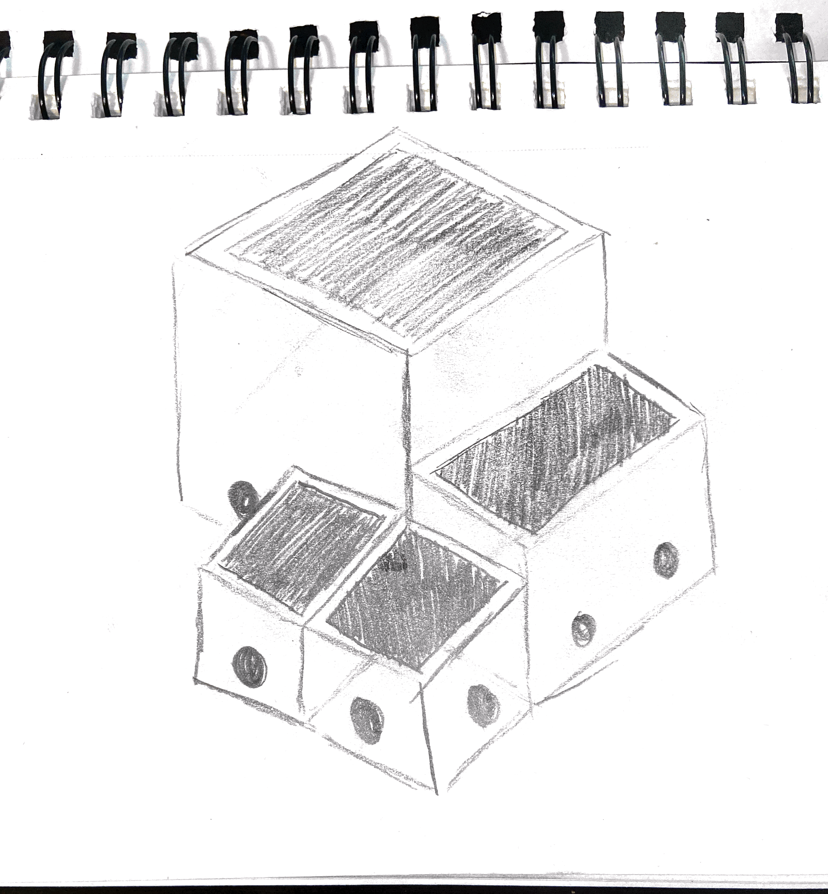
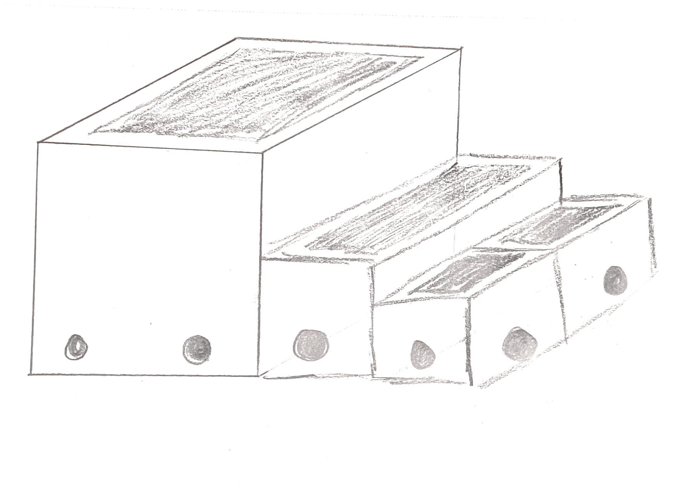
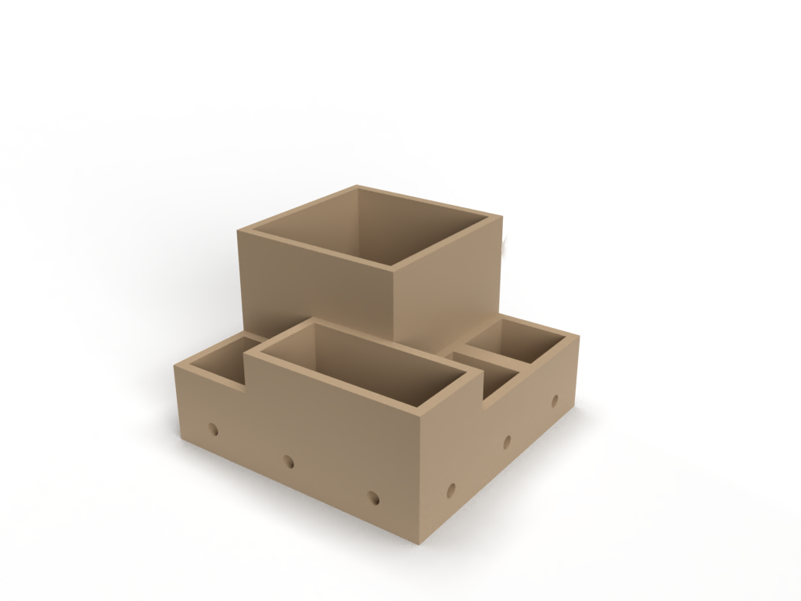

I started with some concept sketches to get down my initial ideas. I
also looked at other modular things that exist in the world for
inspiration.
Next, I modeled my idea in Fusion 360. This section was fairly
straightforward since I decided to go with rectangular-shaped
planters. I chose to use rectangles instead of hexagons because I
wanted to be able to change the size of the planters on the assembly
to add height and depth once it is filled with plants. This is easier
to accomplish with rectangular shapes since it is easier to break
things into equal smaller pieces.
Another design challenge I encountered was the joint that connected
each piece to one another (actually making the system modular). One
idea I initially had was to add sliders and channels to every piece.
Another was to just use pegs and they would be inserted into fitting
holes. I also thought to maybe even use a different bracket type piece
that would be put around two connected pieces to join them in the
assembly. Ultimately, I went with the peg idea for a few reasons.
First, I wanted this to be something that was in people’s homes so a
clean aesthetic was important to me. Additionally, a planter isn’t
something that is often moved once it is filled so the strength of
the joint wasn’t a priority for me.
Here are all of the images of the process.

A Modular Planter
For my final project, I designed, modeled, and rendered a modular planter that could fit in the everyday home. It can be used for anything from basil and herbs in the kitchen to flowers and succulents as a centerpiece.


